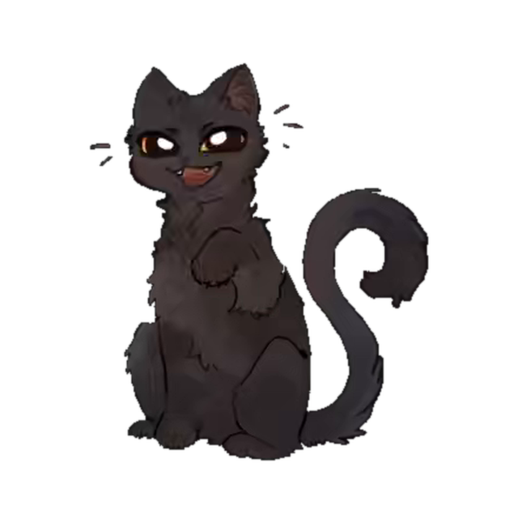

01 · 入口 — 喵灵先开口， chips 降低开口成本
21:47喵灵 Morning

喵灵
在你身边
收起
晚上好呀。今天心里有没有哪段经历，想再走一遍、或者好好了结一下？
说给我听就好，我帮你把它搭成一幕可以走进去的场景。
一次没说完的道别
被误会的那次争吵
很久没见的人
说说那段经历…
02 · 叙述采集 — 语音转文字，喵灵温柔追问
21:48喵灵 Morning
喵灵
在认真听
收起
高三那年搬家的前一天，我没来得及和同桌好好说再见，就只是随便挥了挥手。
语音 · 0″18″
我听到了。那种「来不及」的感觉，在心里放了挺久吧。那天最后见到 TA，是在哪里呀？
在教室。放学的时候，我说了句「拜拜」就走了。
嗯，放学后的教室。再多说一点点也没关系，我都在听。
正在听你说…
03 · 摘要预览 — 整理成卡片，点卡即改
21:51喵灵 Morning
喵灵
在你身边
收起
我把你说的整理成了这样——
《那个没说完的再见》
改一改
时间高三那年，初夏，放学后的傍晚
地点空下来的教室，光从窗户斜进来
心愿认真地、好好地说一次再见
点卡片任意一处都能修改
是这样的吗？哪里不对就告诉我。
再补充一点对，就是这样
也可以直接打字补充…
04 · 角色设定 — 角色卡逐项可点，补充校准
21:53喵灵 Morning
喵灵
在你身边
收起
那，站在你面前的 TA 是谁呢？
晚
林晚
高中同桌
介绍爱笑，总借我半块橡皮的那个人
TA 说话轻轻的
别替 TA 做决定
+ 补充一点
好，我记住 TA 的样子了。进去之后觉得哪里不像，随时校准。
搭好这个场景
还想补充关于 TA 的事…
05 · 生成等待 · 前段 — 喵灵在忙，进度以消息送达
21:54喵灵 Morning

喵灵
正在为你准备
先去忙
交给我，大概一首歌的时间。你可以在这陪我，也可以先去倒杯水。
那间放学后的教室，搭好了21:54
那天的光也调好了，偏暖一点21:55
在给 TA 选合适的语气…进行中
喵灵正陪着你 · 切出去也没关系，好了我叫你
想说什么也可以先留言…
06 · 等待后段 → 就绪 — 预告卡收尾，主动权在人
21:56喵灵 Morning
喵灵
准备就绪
收起
给 TA 选好了语气，轻轻的21:56
都准备好了。随时可以进去，也可以再坐一会儿——它一直都在。
《那个没说完的再见》
放学后的教室 · 和林晚 · 约 5 分钟 · 随时可离开
走进去
我还想再坐一会儿
和喵灵说点什么…